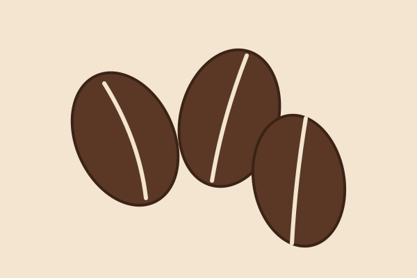
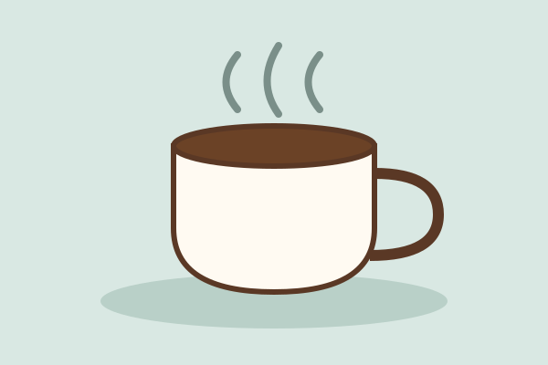

Freshly Roasted Beans
Every batch is roasted in small quantities so that you always receive beans at their peak flavor. Our single-origin selection comes straight from family farms around the world.

Every batch is roasted in small quantities so that you always receive beans at their peak flavor. Our single-origin selection comes straight from family farms around the world.

Whether you like espresso, pour-over or cold brew, our baristas will help you find the brewing method that suits your taste. Visit us and discover your new favorite cup.
